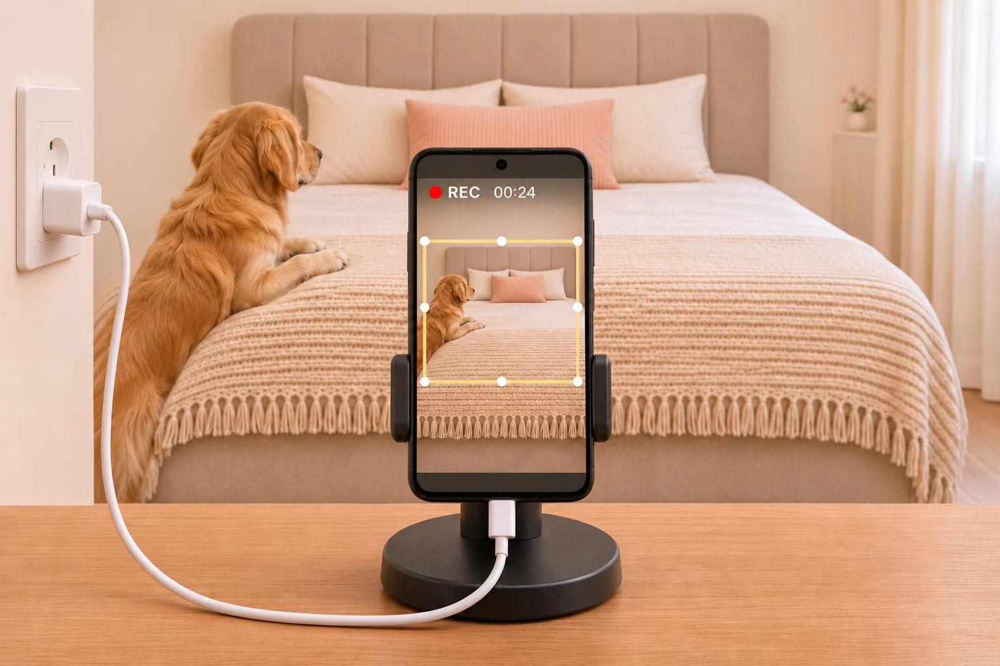
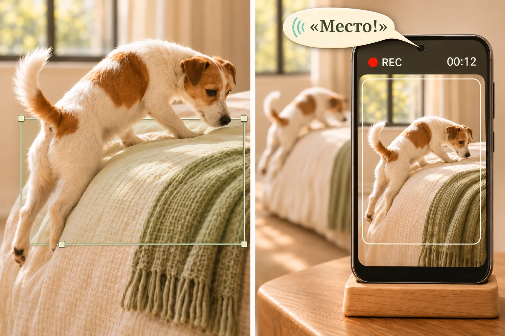

ПРИВЫЧНЫЙ ДОМ. ЗНАКОМЫЙ ГОЛОС.
Вы ушли.
А правила
остались.
Питомец в зоне — телефон воспроизводит вашу записанную команду и сохраняет видео события.
Тестовая версия 0.53 · Android 11+ · ARM64 · APK 78,1 МБ

ТРИ ПРОСТЫХ ШАГА
Пусть дома прозвучит
знакомое «место».
- 01
Поставьте телефон
Устойчиво, задней камерой к кровати или другому месту. Подключите питание.
- 02
Выделите зону
Настройте рамку на изображении. Для первого запуска можно оставить обнаружение по движению.
- 03
Запишите команду
Скажите короткую знакомую фразу и начните наблюдение. При событии приложение воспроизведёт её.

Сначала увидеть. Потом понять.БОЛЬШЕ СПОКОЙСТВИЯ
Не гадать,
что было дома.
- Ваш голос при событии
- Одна фраза или несколько по очереди, с настраиваемой паузой. Можно оставить только видео.
- Момент целиком
- Видеособытие включает 5 секунд до срабатывания и ещё 5 секунд после ухода из зоны.
- Свет и запись
- В автоматическом режиме подсветка включается при событии, если камера телефона её поддерживает.
- Удобно пересмотреть
- Превью, события за сутки, переключение роликов свайпом и полноэкранный просмотр.
НАЧНИТЕ С ТОГО, ЧТО УЖЕ ЕСТЬ
Дайте запасному
телефону новое дело.
Скачайте APK и попробуйте наблюдение в своей комнате. Сначала проверьте запись и команду, находясь рядом.
Скачать APK · 0.5317 ноября 2026 · Доступна сборка 0.53 · Android 11 и новее, ARM64
Как установить
- Скачайте и откройте APK на Android.
- При запросе Android разрешите установку из используемого браузера.
- Откройте приложение и выдайте разрешение на камеру. Для звука потребуется микрофон.
При обновлении устанавливайте поверх прежней версии, не удаляя приложение. Экспериментальная интеллектуальная зона по умолчанию выключена.
Как проверить файл?
SHA-256 этой сборки:
6ff0c8bcf43eab4a4bf806caeef0f499539436b4d7d1253affea9adc0ff4fa22ПЕРЕД НАЧАЛОМ
Пара важных ответов.
Нужна ли отдельная камера?
Камерой служит запасной Android-телефон с установленным приложением. В этой версии основное наблюдение и записи доступны на самом телефоне.
Можно ли выключить голос?
Да. Снимите галочку рядом с командой — останется запись видео. Галочка «Звук» отдельно управляет звуком в самом видео.
Что такое интеллектуальная зона?
Экспериментальная функция 0.52: запоминает визуальные признаки места и пробует восстановить рамку после небольшого перемещения телефона. Найденную рамку нужно подтвердить. Сильно другой ракурс, темнота или смена покрывала могут помешать. Перед переносом останавливайте наблюдение.